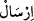
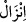

‘Önlerinden ve arkalarından’ ibâresi ‘geçmişte kâfirlerin başlarına gelenleri
hatırlatarak geçmiş zaman cihetinden veya âhirette kendilerini bekleyen âkıbete karşı
ikaz ederek gelecek zaman cihetinden’ anlamına da gelebileceği gibi, kesretten kinâye
de olabilir. Tıpkı “rızkı her yerden kolayca gelen bir kasaba” (Nahl 16/112) âyetinde
olduğu gibi. Bu durumda, ‘rusül/peygamberler’ önceki ve sonraki peygamberleri ya da
peygamberlerin elçilerini kapsamış olacaktır. Yoksa bu iki kavme gelen, yukarıda
geçtiği üzere, iki peygamberdir ve ‘iki’ de kesret olmaz.
“onlar” ise peygamberlerini hafife alarak “Rabbimiz” peygamber göndermek
“isteseydi elbette melek indirirdi.” Yani sizin yerinize onları gönderir; bizim de
kafamız karışmaz ve kolayca îman ederdik. “demişlerdi”. Ancak meleklerin gönderilişi
“indirme” şeklinde olacağı için ()/gönderme yerine ()/indirme fiili
kullanılmıştır.
“Bu bakımdan bizler, sizin iletmekle görevlendirildiğinizi” iddiâ ettiğiniz “şeyleri
inkâr etmekteyiz! demişlerdi.” ‘İddiâ ettiğiniz’ kaydını koyuyoruz, çünkü böyle bir
görevle vazîfeli oldukları mânâsı da anlaşılabilir.
Bahru’l-ulûm’da der ki: ()’deki () mahzuf bir şartın cevabında gelmiş olup
ibârenin takdîri şu şekildedir: Sizler de bizim gibi birer beşer olduğunuza; bizden üstün
bir yönünüz bulunmadığına ve melek de olmadığınıza göre; size de getirdiğiniz mesaja
da îman etmiyoruz. ( )’nın, başında geldiği edatın, fiil olması gerekmemektedir;
)’nın, başında geldiği edatın, fiil olması gerekmemektedir;
mübtedâ ve haberden oluşan bir isim cümlesinin başına da pekâlâ gelebilir.
Kâşifî de şöyle der: “Müşrikler peygamberlerin sûretlerine takılıp kalmışlar, sadece
dış görünüşlerine baktıklarından onların mânevî şahsiyetlerinden gâfil olmuşlardır.”
Ey sûretperest, daha kaç sûrete tapacaksın?
Mânâyı gören sûrete tapmayı bırakır.
Sûrete tapan şu gözünü bağla;
Tâ ki mânâ nûrundan hissen olsun.
Rivâyete göre Ebû Cehil: Kureyş’in ileri gelenlerinden bir grubun içinde:
‘Muhammed’in durumu bizim kafamızı karıştırdı, şiirden, kehânetten ve sihirden
anlayan bir adam bulsanız da onun durumunu bize aydınlatsa.’ deyince, Utbe b. Rebî’a:
‘Ben şiir, kehânet ve sihir duymuş – işitmiş biriyim; bunlardan az çok anlarım; neyin ne
olduğunu ayırt edebilirim.’ diyerek Peygamber Efendimiz’in yanına gelip: “Yâ
Muhammed! Sen mi daha üstünsün Hâşim mi?” ya da “Sen mi üstünsün Abdülmuttalib
mi?” ya da “Sen mi üstünsün Abdullah mı?” “O halde ne diye bizim ilâhlarımız
hakkında ileri geri konuşuyorsun!? Kabîle reisi olmak istiyorsan, sana bir sancak açalım
ve bizim reisimiz ol; kadın istiyorsan, Kureyş kızlarından beğendiğin on tanesini sana
nikâhlayalım; mal-mülk peşinde isen, seni zenginleştirecek kadar mal toplayıp bu arzunu
da giderelim.” demiş. Utbe’yi sessizce dinleyen Hz. Peygamber (s.a.), onun sözünü
bitirmesi üzerine: Bismillâhirrâhmânirrahîm Hâ Mîm… diye okumaya başlayıp